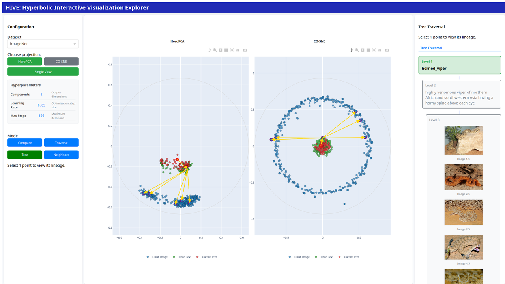

HIVE: A Hyperbolic Interactive Visualization Explorer

Summary
HIVE is an interactive, open-source dashboard for exploring hyperbolic embeddings. These are vector representations that live in curved space rather than flat (Euclidean) space. Hyperbolic geometry is especially well-suited for data with natural hierarchies (like taxonomies or organizational trees), because the amount of space grows exponentially with distance from the center, much like a tree's branches.
Existing visualization tools assume flat geometry and distort hyperbolic structure. HIVE solves this by projecting embeddings into 2D using two curvature-aware methods (HoroPCA and CO-SNE), rendering them in the Poincare disk (a circular map of hyperbolic space), and offering four purpose-built interaction modes. A user study with five domain experts confirmed the tool's effectiveness, scoring 4.7 out of 5 overall.
Key Contributions
- First interactive tool for hyperbolic embeddings. Existing embedding viewers assume flat (Euclidean) geometry; HIVE is the first to combine hyperbolic-aware projection with rich interactive exploration of both image and text data.
- Four purpose-built interaction modes: Compare (inspect selected embeddings side-by-side), Neighbors (find the k most similar points using different distance metrics), Tree (explore hierarchical parent-child relationships), and Traverse (interpolate along the shortest path between two points in hyperbolic space, seeing what data lies in between).
- Dual-view mode: display two different projection methods (HoroPCA and CO-SNE) side-by-side with linked highlighting, making it easy to see how each method reveals different aspects of the data's structure.
- Open-source and modular: supports custom datasets and models, with a prescribed directory structure for easy integration.
Method
HIVE works with two mathematical models of hyperbolic space: the Poincare ball (a disk where distances grow rapidly toward the edge, useful for visualization) and the Lorentz model (a hyperboloid surface, better for computation). The system converts between them as needed.
To reduce high-dimensional embeddings to 2D for display, HIVE uses two methods. HoroPCA is a hyperbolic version of PCA (principal component analysis) that projects data onto horospheres, special curved surfaces that preserve the geometry of hyperbolic space. CO-SNE adapts the popular t-SNE algorithm by replacing Euclidean distances with hyperbolic distances, so neighborhood relationships are faithfully preserved.
The four interaction modes serve complementary purposes. Compare lets users select up to 5 points for side-by-side inspection. Neighbors finds the k most similar points, with a choice of distance metrics. Tree visualizes hierarchical parent-child relationships in the data's semantic taxonomy. Traverse picks two points and interpolates along the geodesic (shortest path in curved space) between them, revealing what data samples lie along the way.
We evaluated HIVE on the GRIT and ImageNet-1K datasets encoded with HyCoCLIP (a hyperbolic vision-language model), combining free-form exploration sessions with structured Likert-scale surveys across 5 expert users.
Results
| Evaluation Aspect | Mean Score (out of 5) |
|---|---|
| Usefulness | 4.5 |
| Quality of Visualization | 4.8 |
| User Experience | 4.7 |
| Overall Average | 4.7 |
Key qualitative findings from the expert study: CO-SNE produces more coherent local clusters than HoroPCA. Text embeddings cluster near the center of the Poincare disk while image embeddings sit near the boundary. In hyperbolic space, the center represents general concepts and the edges represent specific ones, confirming that text descriptions are more general than individual images. Tree mode validated known semantic hierarchies and revealed unexpected non-hierarchical patterns. Traversal mode helped identify semantic inconsistencies between nearby points, serving as a diagnostic tool.